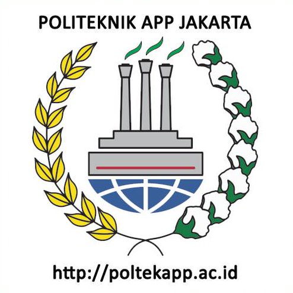
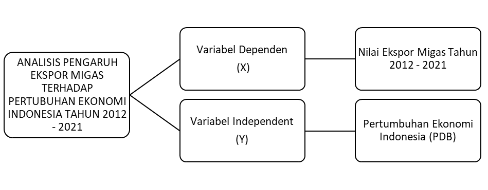

ANALISIS PENGARUH EKSPOR MIGAS TERHADAP PERTUMBUHAN EKONOMI INDONESIA TAHUN 2012 - 2021
Metode Penelitian Politeknik APP Jakarta
Author
Effrilia Shalsabila
Published
January 20, 2022

1 Pendahuluan
1.1 Latar belakang
Indonesia merupakan salah satu negara berkembang yang berada di Asia Tenggara. Indonesia memilikikeanekaragaman sumber daya alam, hal ini dapat dibuktikan dengan banyaknya jenis komoditas yang ada di Indonesia. Indonesia memiliki potensi besar untuk melakukan kegiatan transaksi ekonomi dengan negara lainnya, kegiatan ini biasa disebut dengan perdagangan internasional. Tingkat keberhasilan suatu negara dapat diukur berdasarkan pertumbuhan ekonomi negara tersebut.
Pertumbuhan ekonomi suatu negara sangat berpengaruh terhadap keberlangsungan hidup masyarakat dan negara. Kenaikan pertumbuhan ekonomi setiap tahunnya merupakan pertanda bahwa suatu negara dapat menjaga stabilitas perekonomiannya dan menghasilkan tambahan pendapatan untuk masyarakat di negara tersebut. Pembangunan ekonomi Indonesia tidak pernah lepas dari pertumbuhan ekonomi karena mencakup hal – hal yang lebih luas seperti perubahan jumlah tabungan, investasi, dan struktur perekonomian.
Sebagian masyarakat beranggapan bahwa pertumbuhan ekonomi memberikan dampak positif dan menimbulkan hasil yang baik bagi kesejahteraan masyarakat. Seperti yang telah dijelaskan “Pada tahap-tahap awal pembangunan ekonomi suatu negara pada umumnya pada neraca pembangunan ekonomi berorientasi pada masalah pertumbuhan ekonomi (growth oriented).” (Purba, Tobing & Hutabarat, 2012:26).
Defisit neraca perdagangan dapat terjadi ketika impor lebih besar daripada ekspor dan sebaliknya apabila nilai ekspor lebih besar dari nilai impor maka neraca perdagangan akan surplus. Perdagangan Internasional mengelompokan ekspor menjadi dua yaotu ekspor minyak dan gas (Migas) dan ekspor Non migas. “Perdagangan internasional adalah kegiatan memperdagangkan berbagai output berupa barang dan jasa yang dihasilkan suatu negara untuk dapat dijual ke luar negeri serta mendatangkan barang dan jasa dari luar negeri, kemudian didatangkan ke negara tersebut dengan tujuan memenuhi kebutuhan dalam negeri” (Razak & Indra, 2012:212).
Para pengusaha – pengusaha yang ada di Indonesia memiliki minat yang sangat besar terhadap kegiatan ekspor. Namun, kegiatan ekspor ini juga memiliki banyak kendala, salah satunya ketika para pengusaha lebih memilih untuk melakukan ekspor barang – barang mentah dibandingkan dengan mengekspor barang jadi, dikarenakan harga barang mentah yang cukup tinggi. Hal tersebut menjadikan Indonesia selalu mengalami surplus ekspor setiap tahunnya dikarenakan kenaikan harga barang yang akan di ekspor bukan karena pertambahan nilai tambah.
Kenaikan jumlah ekspor dan harga di pasar internasional juga menjadikan pertumbuhan nilai ekspor non migas di Indonesia meningkat setiap tahunnya. Namun, ekspor non migas juga memiliki kendala yaitu melemahnya permintaan ekspor non migas Indonesia di pasar internasional. Selain itu, masalah lain seperti banyaknya persaingan usaha, informasi tentang pasar ekspo ryang masih terbatas, terbatasnya distribusi dan infrastruktur daerah pedesaan. Indonesia memiliki lima sektor non migas yang memiliki pertumbuhan di atas lima persen yakni industri makanan dan minuman, industri tekstil dan pakaian industri logam, industri karet dan industri kulit.
Tujuan Indonesia mengekspor hasil minyak dan gasnya ke berbagai negara untuk memperluas pasar dalam negeri dan pasar luar negeri serta untuk menggerakan pertumbuhan ekonomi di Indonesia. Indonesia memiliki sumber daya alam yang melimpah menjadikan faktor tersebut sebagai salah satu modal pembangunan negara. Menurut Fauzi dalam penelitian Gandhi (88:2014) menyatakan bahwa: “Selama lebih dari empat dasawarsa sumber daya alam sudah menjadi mesin pertumbuhan ekonomi Indonesia. Bahkan pada masa orde baru sumber daya alam minyak, hutan dan sumber daya mineral menjadi ujung tombak dalam memacu pertumbuhan ekonomi Indonesia”.
Menurut Undang-Undang Nomor 22 Tahun 2001 Tentang Minyak dan Gas Bumi Pasal 1angka 1 dalam Fajar (2013:3) Menyebutkan bahwa: Minyak Bumi adalah hasil proses alami berupa hidrokarbon yang dalam kondisi tekanan dan temperatur atmosfer berupa fasa cair atau padat, termasuk aspal, lilin mineral atau ozokerit, dan bitumen yang diperoleh dari proses penambangan, tetapi tidak termasuk batu bara atau endapan hidrokarbon lain yang berbentuk padat yang diperoleh dari kegiatan yang tidak berkaitan dengan kegiatan usaha Minyak dan Gas Bumi. Pengertian Gas Bumi menurut Undang-Undang Nomor 22 Tahun 2001 Tentang Minyak dan Gas Bumi Pasal 1 angka 2 Menyebutkan bahwa : “Gas Bumi adalah hasil proses alami berupa hidrokarbon yang dalam kondisi tekanan dan temperatur atsmofer berupa fasa gas yang diperoleh dari proses penambangan Minyak dan Gas Bumi.
Novianingsih (2011:1) berpendapat “Ekspor akan secara langsung memberi kenaikan penerimaan dalam pendapatan suatu negara. Terjadinya kenaikan penerimaan pendapatan suatu negara akan mengakibatkan terjadinya kenaikan tingkat PDB. Dengan kata lain ekspor akan menyebabkan pertumbuhan ekonomi.”
1.2 Ruang lingkup
Indonesia menjadikan kegiatan ekspor sebagai sumber utama untuk menambah devisa negara. Volume ekspor akan meningkat seiring dengan meningkatnya produksi barang – barang yang akan di ekspor. Nilai ekspor non migas Indonesia ke negara – negara ASEAN dan negara – negara lainnya masih jauh lebih besar dibandingkan dengan ekspor migas. Dalam kebijakan devisanya, Indonesia merupakan negara yang menggunakan sstem devisa bebas ini dapat diartikan bahwa aliran modal bebas masuk dan keluar sehingga perekonomian Indonesia menjadi rentan mengalami resiko dari kegiatan spekulasi pemilik modal yang sewaktu - waktu akan menarik dananya.
Dengan ini maka kebijakan cadangan devisa di Indonesia diarahkan untuk dapat memelihara kondisi perekonomian yang sehat, mendorong ekspor, mengendalikan impor, serta mendukung kestabilan pasar dan kurs valuta asing (Putri, 2017). Dalam penelitian ini saya akan melakukan analisis mengenai ‘’Pengaruh Eksor Migas dan Non Migas Terhadap Perumbuhan Ekonomi Indonesia Tahun 2018 – 2022’’.
1.3 Rumusan masalah
Berdasarkan uraian latar belakang di atas masalah penelitian dirumuskan sebagai berikut:
Bagaimanakah pengaruh ekspor migas terhadap pertumbuhan ekonomi Indonesia tahun 2012 – 2021?
1.4 Tujuan dan manfaat penelitian
Berdasarkan rumusan masalah di atas, maka tujuan penelitian ini sebagai berikut:
Untuk mengetahui pengaruh ekspor migas terhadap pertumbuhan ekonomi Indonesia tahun 2012 – 2021
Penulis berharap Makalah ini dapat menambah wawasan para pembaca mengenai pengaruh ekspor komoditi migas Indonesia dan pengaruhnya terhadap perekonomian negara dari tahun 2012 – 2021.
Menurut para ahli, Ekonomi klasik terbagi menjadi empat faktor yang berpengauh teradap pertumbuhan ekonomi, yaitu : jumlah penduduk, jumlah stok barang modal, luas tanah dan kekayaan alam, serta tingkat ekonomi. para ahli memandang bahwa pertambahan jumlah penduduk juga berpengaruh terhadap tingkat pertumbuhan ekonomi. Para ahli juga menilai apabila penduduk sedikit dan kekayaan alam meningkat akan memperbesar nilai pengembalian modal dan sebaliknya, apabila pertumbuhan penduduk semakin banyak maka akan menyebabkan menurunnya tingkat kegiatan ekonomi. Maka kemakmuran masyarakat akan menurun dan ekonomi akan mencapai tingkat perkembangan yang rendah (Sukirno, 2012:433).
2.2 Teori Schumpter
“Teori ini menekankan pada inovasi yang dilakukan oleh para pengusaha dan mengatakan bahwa kemajuan teknologi sangat ditentukan oleh jiwa usaha (enterpreneuship) dalam masyarakat yang mampu melihat peluang dan berani mengambil resiko membuka usaha baru, maupun memperluas usaha yang telah ada” (Syahputra 2017:185).
2.3 Teori Pertumbuhan Ekonomi Neo-Klasik
Robert Solow, Edmud Phelps, Harry Johnson dan J.E. Meade merupakan ahli ekonomi yang mengembangkan teori pertumbuhan ekonomi Neo-klasik yang berkembang sejak tahun 1950-an. Dalam teori ini, pertumbuhan ekonomi tergantung pada tingkat pertambahan dan penawaran faktor - faktor produksi serta tingkat kemajuan teknologi. Faktor yang paling penting adalah kemajuan teknologi dan pertambahan kemahiran dan kepakaran tenaga kerja. (Sukirno, 2012:437).
2.4 Kerangka Penelitian
Kerangka penelitian merupakan sebuah konsep yang ada di dalam penelitian yang saling berhubungan. Variabel satu dengan variabel yang lain bisa terkoneksi secara detail dan sistematis. Nilai ekspor migas tahun 2012 – 2021 sebagai variabel independent dan pertumbuhan ekonomi Indonesia (PDB) sebagai variabel dependen akan diregresikan untuk mendapatkan tingkat signifikannya sehingga dapat di lakukan analisis. Dengan hasil regresi tersebut maka akan diketahui bagaimana pengaruh masing – masing variabel dan tingkat signifikannya. Berdasarkan rumusan masalah dan uraian pembahasan di atas maka kerangka pemikiran dapat dinyatakan sebagai berikut:

3 Metode penelitian
3.1 Data
Jenis data yang digunakan dalam penelitian ini adalah data sekunder. Data sekunder merupakan data yang telah dikumpulkan oleh pihak lain. Data sekunder yang digunakan berasal dari Badan Pusat Statistik (BPS), Trading Economics, website, jurnal, dan laporan yang berasal dari sumber lain. Jenis data yang digunakan adalah data time series (runtun waktu). Data time series merupakan data yang berurutan sesuai dengan urutan waktu. Jangka waktu yang digunakan pada makalah ini adalah tahun 2012 sampai dengan 2021.
Call:
lm(formula = Y ~ X, data = dat)
Residuals:
Min 1Q Median 3Q Max
-117472 -65076 -34762 75369 172821
Coefficients:
Estimate Std. Error t value Pr(>|t|)
(Intercept) 1.772e+05 1.125e+05 1.575 0.154
X 2.153e-01 1.204e+00 0.179 0.863
Residual standard error: 105200 on 8 degrees of freedom
Multiple R-squared: 0.00398, Adjusted R-squared: -0.1205
F-statistic: 0.03197 on 1 and 8 DF, p-value: 0.8625
Figure 1: City and highway mileage for 38 popular models of cars.Color by number of cylinders
3.2 Metode analisis
Metode analisis yang digunakan dalam penelitian ini menggunakan RStudio sebagai alat bantu pengolahan data dan menggunakan regresi univariat atau Ordinary Least Square (OLS) dengan 1 variabel independent. Teknik analisis yang digunakan adalah teknik kuantitatif dan menggunakan penjabaran deskriptif. Penelitian ini bermaksud untuk mengetahui pengaruh ekspor migas terhadap pertumbuhan ekonomi Indonesia tahun 2012 - 2021. Spesifikasi yang dilakukan adalah :
\[
y_{t}=\beta_0 + \beta_1 x_t+\mu_t
\]
Dimana \(y_t\) adalah Pertumbuhan Ekonomi Indonesia (PDB) dan \(x_t\) adalah Nilai Ekspor Migas Tahun 2012 - 2021.
4 Pembahasan
4.1 Pengaruh ekspor migas terhadap pertumbuhan ekonomi Indonesia tahun 2012 – 2021
Indonesia merupakan negara berkembang di Asia Tenggara yang memiliki hasil komoditas minyak dan gas yang sangat besar. Komoditas ini menjadi penopang bagi perekonomian Indonesia karena menjadi sumber daya unggulan yang dapat di perdagangkan baik dalam negeri dan luar negeri. Melakuakn perdagangan lain dapat memperoleh keuntungan, salah satunya dengan membeli barang dengan yang lebih rendah dan menjualnya dengan harga yang lebih tinggi. Pertumbuhan ekonomi memiliki banyak faktor yang memengaruhi pertumbuhan ekonomi seperti jumlah penduduk, jumlah stok barang modal, luas tanah dan kekayaan alam, serta tingkat teknologi.
Berdasarkan penelitian yang dilakukan oleh Putra dan Damanik (2017) menemukan bahwa Ekspor suatu negara bisa meningkat lebih cepat (atau lebih lambat) di bandingkan dengan rata – rata ekspor dunia di sebabkan oleh tiga alasan utama :
Efek komposisi komoditas. Ekspor mungkin terkonsentrasi pada komuditas – komuditas yang permintaannya relative elastis atau inelastic terhadap pendapatan.
Efek distribusi pasar. Ekspor terarah ke pasar – pasar berkembang yang lebih pesat dibandingkan dengan rata – rata dunia.
Efek daya saing. Ekspor lebih dapat bersaing dengan negara – negara pengekspor lain karena produktivitas lebih tinggi atau lebih rendah.
Ekspor merupakan suatu cara bagi suatu negara untuk menjalankan penjualan komoditas baik migas dan non migas yang kita miliki kepada negara dengan ketentuan pemerintah dan mendapatkan manfaat untuk penambahan cadangan devisa. Sektor migas dapat memberikan pengaruh secara langsung terhadap pencapaian pertumbuhan ekonomi dan pendapatan perkapita. Sektor migas mempengaruhi penurunan tingkat kemiskinan di Indonesia.
Tabel 1.1 Pertumbuhan Ekonomi Indonesia, Nilai Ekspor Migas Tahun 2012 – 2021 (Dalam US$).
Tahun
Pertumbuhan Ekonomi Indonesia
(PDB) (X)
Nilai Ekspor Migas Tahun 2012 - 2021 (Dalam US$) (Y)
2012
$91,787.00
$369,773.00
2013
$91,252.00
$326,332.00
2014
$89,081.00
$300,188.00
2015
$86,085.00
$185,744.00
2016
$93,188.00
$131,055.00
2017
$101,562.00
$157,444.00
2018
$104,227.00
$171,717.00
2019
$11,191.00
$117,893.00
2020
$105,869.00
$82,511.00
2021
$118,609.00
$121,474.00
Sumber : Badan Pusat Statistik (BPS) dan Trading Economics
Dari data pertumbuhan ekonomi Indonesia dan nilai ekspor migas tahun 2012 – 2021 pada table 1.1. Pertumbuhan ekonomi Indonesia dan nilai ekspor migas mengalami penurunan pada tahun 2014 – 2015 dengan total selisih sebesar $2,996.00 pada pertumbuhan ekonomi dan selisih $114,444.00 pada nilai ekspor migas . Penurunan ini disebabkan karena penurunan ekspor minyak mentah, penurunan ekspor gas, anjloknya konsumsi rumah tangga dan daya beli masyarakat yang kurang memadai. Pada tahun 2018 – 2019 pertumbuhan ekonomi Indonesia mengalami penurunan yang sangat signifikan dengan selisih $93,036.00 pada pertumbuhan ekonomi dan selisih $53,824.00 pada nilai ekspor migas. Penurunan ini disebabkan karena kinerja total ekspor Indonesia yang menurun serta adanya wabah Covid – 19 yang semakin meningkat di setiap negara yang menghambat kegiatan perdagangan internasional. Penurunan tersebut sangat berdampak sekali bagi perekonomian negara karena Indonesia seringkali melakukan ekspor ke berbagai negara.
Namun, pada tahun 2019 – 2020 pertumbuhan ekonomi Indonesia dan nilai ekspor migas sudah mengalami peningkatan hingga tahun 2021 sehingga peningkatan tersebut menjadi acuan dan perkembangan pertumbuhanekonomi Indonesia yang semakin membaik dikarenakan pemulihan masa pandemi Covid – 19 sehingga pertumbuhan ekonomi Indonesia mulai meningkat. Selain itu, peningkatan ekspor tersebut dikarenakan pemerintah melakukan penyetopan ekspor raw material, dan kenaikan harga ekspor bahan mentah yaitu nikel hingga 2 miliar (dolar AS). Peringkat daya saing Indonesia atau competitiveness index juga mengalami kenaikan, tingkat konsumsi dan produksi yang menguat serta purchasing manager index (PMI) manufaktur yang meningkat.
4.2 Analisis masalah
Hasil regresinya adalah
reg<-lm(Y~X,data=dat)summary(reg1)
Call:
lm(formula = Y ~ X, data = dat)
Residuals:
Min 1Q Median 3Q Max
-117472 -65076 -34762 75369 172821
Coefficients:
Estimate Std. Error t value Pr(>|t|)
(Intercept) 1.772e+05 1.125e+05 1.575 0.154
X 2.153e-01 1.204e+00 0.179 0.863
Residual standard error: 105200 on 8 degrees of freedom
Multiple R-squared: 0.00398, Adjusted R-squared: -0.1205
F-statistic: 0.03197 on 1 and 8 DF, p-value: 0.8625
Call:
lm(formula = Y ~ X, data = dat)
Residuals:
Min 1Q Median 3Q Max
-117472 -65076 -34762 75369 172821
Coefficients:
Estimate Std. Error t value Pr(>|t|)
(Intercept) 1.772e+05 1.125e+05 1.575 0.154
X 2.153e-01 1.204e+00 0.179 0.863
Residual standard error: 105200 on 8 degrees of freedom
Multiple R-squared: 0.00398, Adjusted R-squared: -0.1205
F-statistic: 0.03197 on 1 and 8 DF, p-value: 0.8625
Dapat dilihat dari tabel di atas bahwa ini ggplot regresi tersebut.
Berdasarkan analisis yang telah dilakukan, dapat diketahui bahwa nilai ekspor migas Indonesia tahun 2012 – 2021 memiliki pengaruh yang besar terhadap pertumbuhan ekonomi Indonesia tahun 2012 – 2021. Sehingga dapat dikatakan bahwa nilai ekspor migas memiliki peluang besar untuk ekonomi Indonesia di masa yang akan datang. Dengan perkembangan nilai ekspor migas dan ekonomi Indonesia juga berpengaruh kepada masyarakat untuk menambah lapangan pekerjaan dan mengurangi jumlah pengangguran serta dapat membantu mengembalikan perekonomian Indonesia setelah pandemi Covid-19 berakhir.
5.2 Saran
Berdasarkan kesimpulan yang ada di atas, alangkah baiknya apabila Indonesia tetap membatasi kegiatan ekspor migas ke negara lain agar tidak cepat habis, sehingga generasi muda di masa yang akan datang dapat merasakan hasil alam Indonesia. Pemerintah Indonesia juga harus mengeluarkan peraturan mengenai pembatasan ekspor migas di Indonesia dan lebih menekanan untuk melakukan ekspor non-migas di Indonesia.
SIHOMBING, M. (2021). ANALISIS PENGARUH EKSPOR MIGAS, EKSPOR NON MIGAS DAN PENANAMAN MODAL ASING TERHADAP PERTUMBUHAN EKONOMI INDONESIA TAHUN 2000-2019. http://repository.uhn.ac.id/handle/123456789/5875